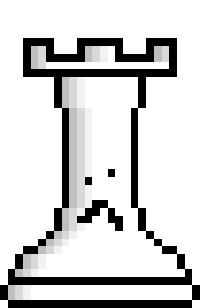
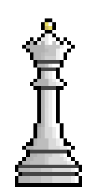
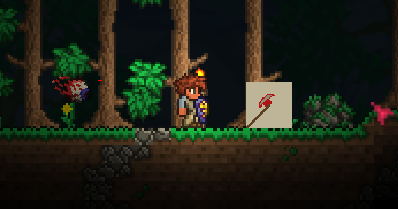

TobysMod For Terraria
Hey everyone, since Terraria is probably my favourite game ever (I have 1000+ hours in it), I though it would be fun to learn a little about game development, modding, and C#, so I decided to make a mod for the game. Since there are a ton of incredible mods out there, I thought that the development part of the mod would be easy, but that could not be further from the truth. As it turns out, documentation for tmodloader is sparse, and what does exist is pretty old and sometimes completely unusuable. Most of this project was possible by looking at open source mods and using their code as a base.
The first step was probably the most annoying, installing .NET frameworks. I wanted to use Visual Studio for this project to learn a bit about it and because that is what all the tutorials use. As it turns out, the required .NET version for tmodloader does not come packaged with the newest Visual Studio installs, and the old version that I needed was very hard to find buried somewhere in the microsoft website. I would recommend to anyone trying to make a Terraria mod to use mono and a better IDE than Visual Studio which is a bloated anc confusing experience.
To begin, I needed an idea. Almost everything that could be in Terraria is already in Terraria so I was kind of at a loss. This is always the hardest part of any project for me. In the end I decided to make a chess-themed biome, an underwater aquafer, and a savannah biome. These were mostly inspired by both Minecraft mods and other Terraria mods. This turned out to be a big mistake since I did not have a clear idea of how much work went into making a mod, and the scope of this project was just way too large.
Now I have never been much of an artist, so to make my dream come alive I recruited one of my friends, Alice, to make the art assets for the game. On the right you can see my attempt at making a pixelart rook, and then you can see her queen. Quite a difference huh. Now that I had the hard parts out of the way (coming up with an idea and finding an artist), all that was left was the easy bit, making the mod.
 I started by following a very simple tutorial on the Terraria forums to make a custom weapon in the game. As you can see, it didn't go so well. The "Trump Sword" (which has an axe sprite for some reason), worked as a weapon, but it lacks transparency and it looks awful. This is why I asked Alice to help me with this project. As terrible as it was, it actually worked as a weapon. To see just a few lines of code I wrote myself (with a tutorial) become something real felt amazing, and it encouraged me to keep going. Since tmodloader is just an API for Terraria, making something like a weapon is pretty easy. I made a couple more silly test weapons, mostly swords and bows, until I wanted to take on the next part of the project, making a block.
Once I had gotten over the initial thrill of making silly weapons, it started to dawn on me just how much work this project was going to be. For example, one block needs a sprite and code to make it work. As well as this, it needs a tilesheet to let the sprite mesh with other blocks. As well as this, it needs a different sprite and code to allow the player to pick up and hold it as an item. As well as this, it needs an associated wall block and that wall block needs an item as well. Then there is all the furniture sets, crafting recipes, and other.
Making the block was pretty simple, and I just followed a couple tutorials online to do it, but the scope of the project was really starting to become too much. After around a week of work all I had to show for it was a block that kind of worked, three terrible swords, and nothing else. It was at this time that I wanted to try what I thought would be the hardest part. Much like everything else, this was pretty easy with tmodloader, as long as I was using one of the default enemy AIs. I had never tried making an AI before, even in my game jam projects my friend would always do that part or we would have simple enemy AIs, like patrolling an area. After some research, I learned about AI State Machines. This implementation is what a lot of people seemed to be using so I decided I would use that as well. With this in hand, I was able to make a couple of basic enemies that could move around, target the player, and have special attacks. It was around this time that I was starting to lose interest in the project as well as Terraria as a whole. After making these enemies, I stopped with the project for a couple of weeks.
Once I came back to it after a short break, the thing I wanted to take on next was customizing the world generation. This was also a pretty simple process and there were some great online tutorials. This was pretty easy, but testing everything was slowly becoming a nightmare. It would take around 30 seconds to compile and load the mod in tmodloader, and around 3 mins to generate a world. This was a lot of waiting to determine if some small change had worked or not. After this final world generation part of the project, me and Alice decided to work on a new creative venture together. If you are curious, you can see that venture under the "Game dev with Godot" on the site.